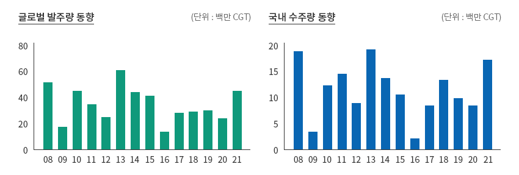
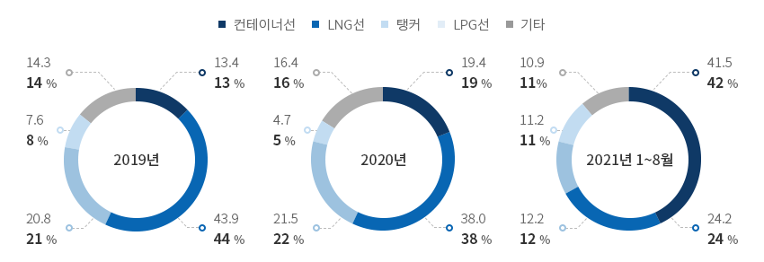
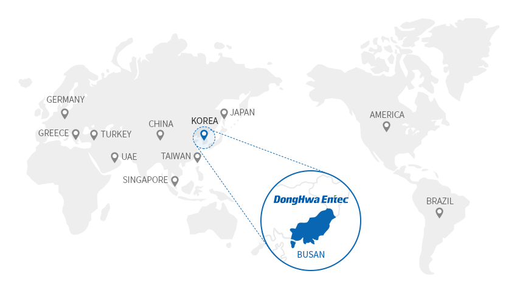
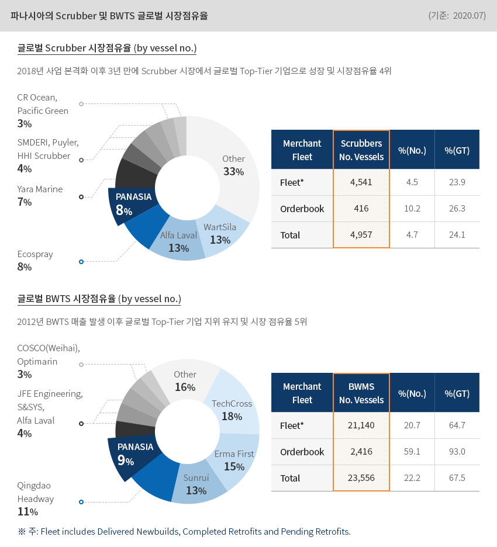
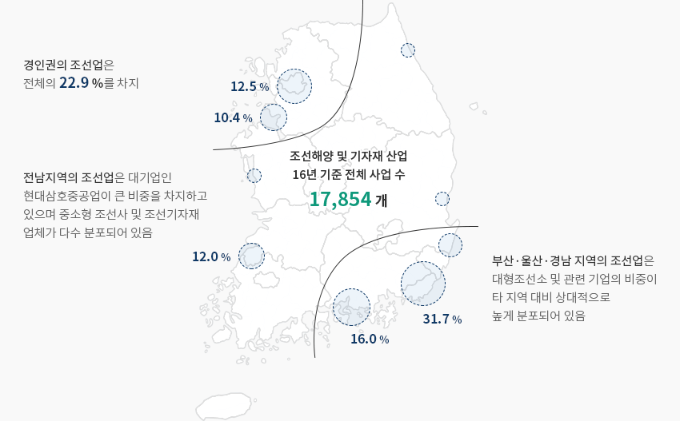
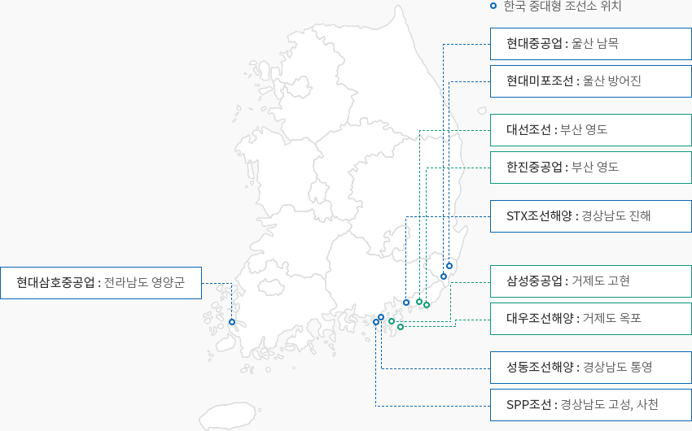

조선해양
- Home
- Why KOREA
- 산업
- 조선해양
조선해양
Shipbuliding & Marine
-
한국 조선ㆍ해양 산업의 글로벌 경쟁력 내용닫기한국 조선ㆍ해양 산업의 글로벌 경쟁력국제해사기구(IMO)는 지속적으로 환경 규제를 강화하고 있으며, 선박으로부터 발생하는
대기오염물질과 온실가스 저감을 위한 기준이 강화되면서 기존의 선박 추진연료의 청정화가 진행 중에 있다.
에너지 패러다임의 변화와 선박의 스마트화로 전 세계 조선 및 기자재 업계는 LNG, 수소, 암모니아, 전기 등
저탄소 또는 무탄소 연료를 기반으로 하는 선박에 대한 선제적 기술개발을 앞당기고 있다. 또한 발전하고 있는
ICT 기술로 인해 선박의 스마트화 등도 동시에 추진 중에 있다.따라서 글로벌 경쟁력을 갖추기 위해 한국 조선 및 기자재 업체들은 이전부터 산업제품 및 기술을
고부가가치, 친환경 및 스마트화에 집중해왔다.고부가가치/친환경 선박에 대한 기술경쟁력을 갖춘 국내 조선소의 수주량은 8년 만에 최고치를 달성하였다.
’21년 선박 수주량은 ‘20년 동기 대비 112% 증가한 1,744만CGT를 달성하였다.
이와 같은 수주실적은 같은 기간을 기준으로 볼 때 2013년(1,844만CGT) 이후 8년 만에 최고인 것으로 파악되었다."글로벌 발주량 및 국내 조선소 수주량"글로벌 발주량 동향 (단위: 백만 CGT)국내 수주량 동향 (단위: 백만 CGT) ※ 주: 연간 기준(2022년은 1월 2일)
※ 주: 연간 기준(2022년은 1월 2일)
※ 자료 : Clarksons -
국내 조선소 수주량, 2008년이후 최고 증가 내용열기국내 조선소 수주량, 2008년이후 최고 증가국내 선종별 수주비중을 살펴보면 컨테이너선, LNG선, 탱커의 순이다. 해상운임 급등, 글로벌 물동량 증가 등에 따른
글로벌 컨테이너선 발주 호조의 영향으로 컨테이너선이 가장 높은 것으로 나왔다(41.5%, ’21년 1~8월 기준).
한편, 2위는 24.2%를 차지한 LNG선이다. 이는 한국이 높은 기술 경쟁력을 바탕으로 압도적 수주 점유율을
보이는 상황에서 IMO의 해양환경규제 강화 등으로 전세계적으로 LNG선 발주가 증가했기 때문인 것으로 파악된다."국내 선종별 수주비중 및 증가율"(단위: CGT)국내 선종별 수주비중 및 증가율 표로 선종, 년도별 정보제공 선종 2019년 2020년 2021년 1~8월 비중 증가율 비중 증가율 비중 증가율 컨테이너선 13.4 -43.4 19.4 44.9 41.5 114.0 LNG선 43.9 -1.0 38.0 -13.4 24.2 -36.4 탱커 20.8 20.9 21.5 3.7 12.2 -43.3 LPG선 7.6 216.0 4.7 -38.6 11.2 138.4 기타 14.3 15.3 16.4 14.4 10.9 -33.4
국내 선종별 수주비중 및 증가율 표로 선종, 년도별 정보제공 선종 2019년 2020년 2021년 1~8월 비중 증가율 비중 증가율 비중 증가율 컨테이너선 13.4 -43.4 19.4 44.9 41.5 114.0 LNG선 43.9 -1.0 38.0 -13.4 24.2 -36.4 탱커 20.8 20.9 21.5 3.7 12.2 -43.3 LPG선 7.6 216.0 4.7 -38.6 11.2 138.4 기타 14.3 15.3 16.4 14.4 10.9 -33.4 ※ 주: 전년(동기)대비 증가율
※ 자료 : Clarksons -
글로벌기업 한국 진출 주요 사례 내용열기글로벌기업 한국 진출 주요 사례동화엔텍, 열에너지 교환 기술로 ‘월드클래스 기업’ 위치㈜동화엔텍은 1980년 창업하여 선박용 열교환기 수리를 시작으로
이제는 선박용 열교환기 분야최고 수준의 제품을 공급하고 있으며, 발전·플랜트 산업에서도
열교환기 전문기업으로 자리잡고 있다. 특히 LNG 운반선, 가스연료추진선박, LNG-FSRU를
비롯한 초저온용 열교환기에 특화된 세계 최고 수준의 기술력을 가지고 있는 조선기자재 중견기업이다.동화엔텍은 여타 중견기업에서는 볼 수 없는 상당히 큰 규모의 연구소를 설립하여 에너지 및 환경분야에서
독자적인 기술력을 확보하기 위해 많은 투자를 아끼지 않고 있다. 지난 ‘21년 8월에 시운전에 들어간 한국가스공사의’
한국형 천연가스 액화공정(KSMR) 실증설비‘의 핵심기자재인 Cold Box를 개발, 주요 조선소에 공급해 현재 시운전 중에 있다. 파나시아(PANASIA), 친환경 ’황산화물 저감장치(Scrubber)’ 점유율 세계 4위㈜파나시아는 수질, 대기 환경 및 신재생에너지 공급설비 사업을 하는 글로벌 친환경 에너지 설비기업이다.
파나시아(PANASIA), 친환경 ’황산화물 저감장치(Scrubber)’ 점유율 세계 4위㈜파나시아는 수질, 대기 환경 및 신재생에너지 공급설비 사업을 하는 글로벌 친환경 에너지 설비기업이다.
사업 초기에는 수위계측제어장비(TLGS)를 주로 제작하였지만, 선박에 대한 국제 환경규제 강화에
대비하기 위해 2004년 선박평형수 처리장치(BWTS) 개발에 나서면서 친환경 선박 부품회사로 거듭났다.
파나시아 선박평형수 처리장치인 ‘GloEn-Patrol’은 100% 물리적 처리 방식인 필터 여과처리 과정과
자외선 살균기술을 이용해 가장 친환경적이고 안전한 장치로 평가받는다.또한 파나시아는 국제해사기구(IMO)에서 대기 환경보호를 위해 선박용 황 함유량을 제한하는
‘IMO 2020’ 제정에 대비해 국내 최초로 선박용 친환경 황산화물 저감장치를 개발한바 있다.
주요 품목에 대해 국내외 250여개 특허를 보유하고 있으며, 국내 기술로 개발 완료한 황산화물 저감장치는
시장점유율 세계 1위를 기록하고 있다. 파나시아는 글로벌 시장에 본격 진출하기 위해 일본과 중국, 네덜란드 등
3개의 해외법인과 43개 해외 네트워크를 둔 기업으로 성장하였다.파나시아의 Scrubber 및 BWTS 글로벌 시장점유율 (기준: 2020.07)글로벌 Scrubber 시장점유율 (by vessel no.)2018년 사업 본격화 이후 3년 만에 Scrubber 시장에서 글로벌 Top-Tier 기업으로 성장 및 시장점유율 4위
- PANASIA - 8%
- Other - 33%
- WartSila - 13%
- Alfa Laval - 13%
- Ecospray - 8%
- Yara Marine - 7%
- Yara Marine - 7%
- CR Ocean, Pacific Green - 3%
글로벌 Scrubber 시장점유율 표 Merchant Fleet Scrubbers No. Vessels %(No.) %(GT) Fleet* 4,541 4.5 23.9 Orderbook 416 10.2 26.3 Total 4,957 4.7 24.1 글로벌 BWTS 시장점유율 (by vessel no.)2012년 BWTS 매출 발생 이후 글로벌 Top-Tier 기업 지위 유지 및 시장 점유율 5위
- PANASIA - 9%
- TechCross - 18%
- Other - 16%
- Erma First - 15%
- Sunrui - 13%
- Qingdao Headway - 11%
- Qingdao Headway - 11%
- COSCO(Weihai), Optimarin - 3%
글로벌 BWTS 시장점유율 표 Merchant Fleet Scrubbers No. Vessels %(No.) %(GT) Fleet* 21,140 20.7 64.7 Orderbook 2,416 59.1 93.0 Total 23,556 22.2 67.5 ※ 주: Fleet includes Delivered Newbuilds, Completed Retrofits and Pending Retrofits.
-
조선 및 기자재 산업 반등, 제2의 조선업 경제의 재도약 견인할 것으로 기대 내용열기조선 및 기자재 산업 반등, 제2의 조선업 경제의 재도약 견인할 것으로 기대글로벌 금융위기 이후 한국 경기의 급격한 둔화는 최대 주력산업중의 하나인 조선 및 기자재 산업 부진에
상당부분 기인하였다. 최대 주력산업인 동남권 조선 및 기자재 산업의 평균 지역경제 성장 기여도는 2001~08년중
0.9%p에 달했으나 2011~19년중에는 마이너스(-0.4%p)를 기록하며 성장에 기여하지 못한 것으로 파악되었다.하지만 조선업황이 회복의 기회를 맞으면서, 고용, 부가가치 창출 등 직접적 파급효과 외에도 철강, 화학, 금속 등
후방산업 개선에 긍정적인 영향을 미치고 있다. 특히 정부가 적극적인 지원정책을 발표하면서 조선 및 기자재 업황의
회복속도는 더욱 빨라지고 있다. 최근 정부는 ‘K-조선 재도약 전략’ 발표를 통해 세계 조선강국의 위상을 지켜 나가겠다는
계획을 구체화하고 적극적인 지원을 하고 있다.최근 들어 국제 사회의 해운분야 환경규제 강화로 기존 화석연료 선박의 무저탄소 연료를 사용하는 친환경 선박으로의
패러다임 변화가 예측된다. 따라서 패러다임의 변화가 향후 미래시장의 판도를 결정할 것으로 판단한 정부는
「환경친화적 선박의 개발 및 보급촉진에 관한 법률」(약칭 친환경선박법)을 제정(‘18.12)하고 시행(’20.1)중에 있다.
또한 중장기전략을 마련하기 위한 기본계획인 「한국형 친환경선박(Greenship-K) 보급시행계획(’20-‘30)」을 수립하여
친환경 선박 개발 및 보급을 장려 중에 있다."K-조선 재도약 전략"한국 자동차산업 위상 통계로 명칭, 내용 정보제공 명칭 내용 K-조선 재도약전략1)
(‘21.9)- 수주경쟁력에 걸맞는 생산역량 확보
- 친환경·스마트화 선도
- 조선산업 생태계 경쟁력 강화
※ 주: 1) 2022년 조선인력 8,000명 양성, 2030년 생산성 30% 향상,
친환경·자율운항선박 글로벌 1위 수성, 건강한 조선산업 생태계 구축 목표
※ 자료 : 산업통상자원부 보도자료(‘21년 4월 4일) -
국내 조선해양 및 기자재 주요입지 정보 내용열기국내 조선해양 및 기자재 주요입지 정보조선해양 사업체는 주로 동남권(부산·울산·경남)과 일부 수도권에 일부 집중되어 있다.특히, 동남권에는 78.2%의 조선해양기자재 기업이 분포하고 있어 동남권은 조선산업에서
중요한 위치를 차지하는 것을 알 수 있으며, 조선 및 기자재 산업 관련 클러스터가 형성되어 있어
활발한 네트워크 확보가 가능한 지역이다.조선해양 및 기자재 산업 16년 기준 전체 사업 수 17,854개경인권의 조선업은 전체의 22.9 %를 차지전남지역의 조선업은 대기업인 현대삼호중공업이 큰 비중을 차지하고 있으며 중소형 조선사 및 조선기자재 업체가 다수 분포되어 있음부산·울산·경남 지역의 조선업은 대형조선소 및 관련 기업의 비중이 타 지역 대비 상대적으로 높게 분포되어 있음 ※ 자료 : ‘신 해양도시 조성 필요성 연구’, KMI, 2019년 1월
※ 자료 : ‘신 해양도시 조성 필요성 연구’, KMI, 2019년 1월
※ 자료협조 : 한국해양대학교"한국 중·대형 조선소 위치"한국 중대형 조선소는 대부분 경상도에 위치하고 있으며 현대 삼호중공업 만 전라도에 위치 하고 있습니다.한국 중대형 조선소 위치- 현대중공업 : 울산 남목
- 현대미포조선 : 울산 방어진
- 대선조선 : 부산 영도
- 한진중공업 : 부산 영도
- STX조선해양 : 경상남도 진해
- 삼성중공업 : 거제도 고현
- 대우조선해양 : 거제도 옥포
- 성동조선해양 : 경상남도 통영
- SPP조선 : 경상남도 고성, 사천
- 현대삼호중공업 : 전라남도 영양군
"지역별 조선해양기자재 기업 분포 (대부분 부산, 울산, 경남에 집중)"지역별 조선해양기자재 기업 분포 통계로 지역명, 업체수, 비중(%), 종업원수, 매출액(백만원) 정보제공 지역명 업체수 비중(%) 종업원수 비중(%) 매출액(백만원) 비중(%) 부산광역시 346 57.38 19,185 51.57 7,904,104 51.3 울산광역시 65 10.78 2,845 7.65 929,859 6.03 경상남도 143 23.71 10,512 28.26 4,332,419 28.11 수도권 26 4.3 2,216 5.95 931,999 6.05 그외 23 3.83 2,444 6.57 1,312,219 8.51 합계 603 100 37,202 100 15,410,600 100 ※ 자료 : 한국수출입은행(서병수 의원, 국회보고, 21년 02월 23일)


Invest KOREA담당자
조선/해양 PM
김민정
기간산업유치팀
T.+82-2-3460-3239
입지정보 추천
산업단지 정보
[경상남도 거제시] 한내조선특화농공단지
세부정보 바로가기를 클릭하시면 산업단지공단의 Smart K-Factory 서비스의 해당 정보 화면으로 이동합니다.
-
단지명한내조선특화농공단지
-
최초지정일2007.08.13
-
지정면적(km2)277,868
-
관리기관경상남도 거제시
-
인근철도역부산역
-
역과 거리(km)59
-
인근공항김해국제공항
-
공항과의 거리(km)57
-
공업용수 공급용량(톤/일)-
-
소속 기초 지자체경상남도 거제시
-
인구수(명)246,402
산업단지 정보
[경상남도 통영시] 안정국가산업단지
세부정보 바로가기를 클릭하시면 산업단지공단의 Smart K-Factory 서비스의 해당 정보 화면으로 이동합니다.
-
단지명안정국가산업단지
-
최초지정일1974.04.01
-
지정면적(km2)3,866,224
-
관리기관한국산업단지공단
-
인근철도역진주역
-
역과 거리(km)46
-
인근공항사천공항
-
공항과의 거리(km)45
-
공업용수 공급용량(톤/일)6500(㎥/일)
-
소속 기초 지자체경상남도 통영시
-
인구수(명)129,226
산업단지 정보
[전라남도 목포시] 대양일반산업단지
세부정보 바로가기를 클릭하시면 산업단지공단의 Smart K-Factory 서비스의 해당 정보 화면으로 이동합니다.
-
단지명대양일반산업단지
-
최초지정일2009.02.05
-
지정면적(km2)1,545,007
-
관리기관전라남도 목포시
-
인근철도역목포역
-
역과 거리(km)6
-
인근공항무안국제공항
-
공항과의 거리(km)34
-
공업용수 공급용량(톤/일)5,138(㎥/일)
-
소속 기초 지자체전라남도 목포시
-
인구수(명)226,875
산업단지 정보
[경상남도 창원시] 진북농공단지
세부정보 바로가기를 클릭하시면 산업단지공단의 Smart K-Factory 서비스의 해당 정보 화면으로 이동합니다.
-
단지명진북농공단지
-
최초지정일1989.12.15
-
지정면적(km2)133,170
-
관리기관경상남도 창원시
-
인근철도역마산역
-
역과 거리(km)22
-
인근공항사천공항
-
공항과의 거리(km)51
-
공업용수 공급용량(톤/일)330(㎥/일)
-
소속 기초 지자체경상남도 창원시
-
인구수(명)1,038,677
산업단지 정보
[전라남도 순천시] 해룡산업단지(광양만권경제자유구역)
세부정보 바로가기를 클릭하시면 산업단지공단의 Smart K-Factory 서비스의 해당 정보 화면으로 이동합니다.
-
단지명해룡산업단지(광양만권경제자유구역)
-
최초지정일1998.04.22
-
지정면적(km2)1,592,808
-
관리기관전라남도 순천시,광양만권경제자유구역청
-
인근철도역율촌역
-
역과 거리(km)5
-
인근공항여수공항
-
공항과의 거리(km)11
-
공업용수 공급용량(톤/일)4,614(㎥/일)
-
소속 기초 지자체전라남도 순천시
-
인구수(명)281,999
산업단지 정보
[경상남도 거제시] 오비2일반산업단지
세부정보 바로가기를 클릭하시면 산업단지공단의 Smart K-Factory 서비스의 해당 정보 화면으로 이동합니다.
-
단지명오비2일반산업단지
-
최초지정일2014.09.05
-
지정면적(km2)108,613
-
관리기관경상남도 거제시
-
인근철도역진해역
-
역과 거리(km)65
-
인근공항김해국제공항
-
공항과의 거리(km)63
-
공업용수 공급용량(톤/일)64(㎥/일)
-
소속 기초 지자체경상남도 거제시
-
인구수(명)246,402